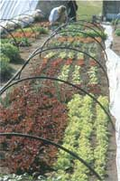
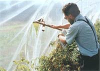
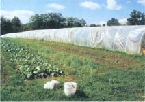

After nearly 20 years of market gardening, we often hear the question, "What would you do differently?"
Simple: Build more - and bigger - hoophouses a whole lot sooner, like from the beginning.
Whether you're a market gardener wanting to extend your season or a family looking to grow more of your own food year-round, a hoophouse is the answer. For as little as a few hundred dollars, a backyard hoophouse can make it seem like you moved your garden hundreds of miles to the south. You can count on four to six weeks of extra production in spring and fall. By adding an inner layer of cover inside a hoop and picking cold-hardy varieties, you can grow right through winter - even in the coldest climates.
What is a hoophouse? Nothing fancy or even expensive, unless you like to make things that way. A hoophouse is just what the name suggests, a series of large hoops or bows - made of metal, plastic pipe or even wood - covered with a layer of heavy greenhouse plastic. The skin is stretched tight and fastened to baseboards with strips of wood, metal, wire or even used irrigation tape and staples. You can build one for a few hundred dollars or a few thousand dollars.
While visiting market gardens from British Columbia to Russia, I have seen serviceable hoophouses made from plastic water pipe and rebar, saplings and rusted bedsprings, fiberglass rods, electrical conduit, strips of old firehose, scraps of plastic ironed together between sheets of newspaper (you can still read the print on the plastic) and old car tires.
Unlike a traditional greenhouse, a hoophouse usually has no heater or ventilation fan. It is heated by the sun and cooled by the wind, providing that you remember to open the vents in the morning and close them in the afternoon. (For growing through winter in cold climates, adding a small heater lets really determined growers laugh at the cold.)
Building a hoophouse is not rocket science. Dollar for dollar and square foot for square foot, a hoop is without question the most forgiving, productive and profitable structure you can own. That's why people who build one, including me, often keep right on building. It's not uncommon to see three, four or more hoophouses on one farmstead.
A hoophouse is the perfect do-it-yourself project. There are only two cardinal rules to remember:
1. Make sure your corners are square. The ground doesn't even have to be perfectly flat. The west end of our first hoop visibly slopes downhill, which aids drainage.
2. Cover the hoop with the plastic skin on a day when there is no wind.
Agricultural engineers call hoophouses "high tunnels," because even a 6-foot-4-inch beanpole like me can stand up comfortably inside of one. At least I can stand up in the middle of our hoop without whacking my head on the steeply sloping metal bows.
That's the second thing I would (and did) do differently - build a high tunnel with high sides. Our first hoop was a Quonset hut-style shelter with almost no clearance on the sides. Sidewall height of the next two tunnels ranges from 4 1/2 to 5 feet. That makes it easy to work a planter, garden tiller or even a small tractor or PTO-powered tiller right up against the baseboards. There is almost no wasted space.
Usually, hoophouses run from 14 to 21 feet wide. Standard commercial length is 96 feet, but you can make them as long or as short as you want. The longest hoophouse I have seen is 304 feet long and is completely portable. That's because it's made in 16-foot-long sections that are easily picked up and carried by two strong people to cover new beds.
Gray Frase says he patterned his modular hoops after Eliot Coleman's much-publicized movable greenhouses, which are pulled back and forth with a tractor and cables. Mobile hoops let you make better use of cover crops and crop rotation, while increasing crop production and getting an even bigger bang for your hoophouse buck. For example, you can leave a moveable hoop over late-season tomatoes until well after frost. When the tomatoes are played out, you can move that same hoop over more cold-hardy crops that were started in open ground. The hoop then provides protection for them through winter.
Sliding hoops back and forth is OK for flatland farmers, but not for those of us with what is politely called "gently rolling" land. Frase, for example, farms on hillsides at about 1,900-feet elevation in the Laurel Highlands of southwestern Pennsylvania. He moves his smaller hoops up and down the hillsides, as needed, to follow his vertical crop rotation.
"There's a lot of rain and dew at our elevation," Frase says. "The tunnels keep that moisture out and solve a lot of fungal problems." His hoops produce tons of early and late tomatoes, "but the winter garden is the real payoff," he says. "It produces thousands of dollars worth of salad for free in winter."
Frase takes his gardening seriously. He has to. The 10 acres he oversees provide vegetables year-round for 700 men, women and children in the Bruderhof community in Farmington, Pennsylvania.
For ventilation, Frase built "tunnel toggles," hinged pieces of wood that spread the double plastic pipe bows every 16 feet, where hoop sections are bolted together. In cold weather, Frase seals the of his hoops with plywood walls framed with 2x4s. Each wall has a small entrance door.
At our place, because the nearest hoop is only 75 feet from the back door of our house, we fancied the ends up a bit with T-111 plywood painted barn red with white trim and a Pennsylvania Dutch hex sign. You can also cover the ends with clear greenhouse plastic, insulation board or polycarbonate greenhouse paneling.
Frase fastens his bows and plastic to 3x3-inch white oak rails. To anchor his hoops to the ground, he drills through the rails at about a 30-degree outward angle. He then pounds 2-foot-long pieces of rebar through the wood into the ground, leaving enough rebar sticking out to serve as a handle.
But is building and managing a hoop worth all of the effort and expense? Agricultural economists would have us consider 25 to 30 "variable costs" and "fixed costs" in answering that question for monocrops of bell peppers, tomatoes, new potatoes or cucumbers, most often sold at low wholesale prices. The list includes everything from "interest on operating capital" and "construction labor" to "ventilation" and "monitoring labor."
That seems a little like charging yourself for breathing or flossing your teeth. At our place, the production and marketing systems are a lot more sophisticated: We never fill a hoop with just one crop, and we sell everything at good retail prices.
On the bookkeeping side, we don't charge ourselves for the few minutes it takes each day to open and close the doors and roll-upsides. The hoop is in our back yard. We have to pay taxes on the land, control weeds and maintain equipment, whether we grow anything or not. We paid cash for the hoop. It more than paid for itself the first season. The hoop doesn't owe us a thing, yet the frame has a projected life of at least 20 years.
Our smallest hoop is 14 feet wide and 96 feet long. It covers 1,344 square feet - just 1/32 of an acre. Subtract 192 square feet for 2-foot-wide walkways running the whole length of the house. That leaves 1,152 square feet of usable space - a fraction of an acre.
That hoop produces from early March through Thanksgiving or even Christmas, depending on the weather. We usually have two early crops of lettuce and other cold-hardy greens. (The first crop is overwintered under small hoops and fabric row cover.) Next come heirloom tomatoes and other heat-loving summer crops like peppers, Oriental cucumbers and eggplant. In fall, we switch back to lettuce, carrots and other cool-season crops.
We gross about $2,500 a year from that hoop. Most of the money ends up in our pocket for the simple reason that, except for buying a few hundred dollars worth of seed each year and replacing the plastic covering every three or four years, we've already bought and paid for everything else we need.
If you wanted to be a full-time hoophouse grower, you could easily fit 10 big hoophouses onto one acre and earn $25,000 a year.
Don't let hoophouses fool you. They are not just for cool-weather production. We grow crisp, sweet lettuce (heat-tolerant varieties, of course) all summer in a hoop, despite record heat and drought the last few years. We use the hoop as a "shade house" by removing the plastic skin and then covering the south half of the frame with 50 percent shade cloth. We both cool and irrigate the lettuce with mini-sprinklers on the ground or a line of overhead sprinklers fastened to the center purlin. The combination keeps the lettuce as moist and and fresh as misters in a supermarket produce display.
Hoophouses are not just for vegetables either. My wife, Melanie, sells cut flower bouquets at our farmer's markets. Her lisianthus, snapdragons and even sunflowers absolutely love it inside a hoop where they are protected from the ravages of wind and rain.
The next hoop we build probably will be just for Mel's flowers.
By Kent Fellenbaum
Photos by Jerry Jost
"User-friendly" best describes a hoophouse - and there are as many ways to build one as there are ways to use it. "I don't think I've ever seen two built the same way," says Dan Nagengast, executive director of the Kansas Rural Center. The photos on this page were taken during a hoophouse-building workshop sponsored by the Center. Despite the differences from one structure to another, there are a few basics for all hoophouses.
1. Site Selection - Pick a level spot with good, well-drained soil. Plant cover crops before you build to increase soil fertility and help control weeds. In much of the country, hoophouses should sit perpendicular to prevailing winds for best cross-ventilation - east to west. Avoid trees and other obstructions that will shade the hoop.
2. Easy access - Closeness to sources of electricity and water keep your hoophouse user-friendly. It won't rain in a hoop, so you'll have to irrigate, whether you hand-water with a garden hose, use drip irrigation, sprinklers or all of the above.
3. On the best building site, mark the corners of your hoop with stakes. A 100-foot tape measure comes in handy. Square the footprint with batter boards and string.
4. With corners square and sides straight and parallel, set your larger diameter pipes, Into which your hoops will be inserted. Start at one corner and work down the length of the hoophouse. Drive pipes to desired depth with sledgehammer. Check pipes often with a level to keep plumb. Stakes are usually spaced 4 feet apart. Use a template to keep spacing uniform - just cut deep notches the width of your pipe in a 2x4.
5. Once ground stakes are In place, bolt baseboards to the outside of the ground stakes and erect hoops. Attach purlins and end braces. Bolt on hipboards for rollup sides and attach any framing or locking channels to secure greenhouse plastic to end hoops.
6. Pull plastic covering tight and secure to end hoops and baseboards (or hipboards, if using roll-up sides). An easy method for rolling up sides is to attach a 1-inch plastic pipe to the outer edge of the plastic cover. A handle on one end of the pipe makes it easy to roll sides up and down, says Michael Orzolek, a vegetable specialist at Pennsylvania State University (see top right photo).
7. Frame ends of hoophouse to meet your needs and cover with greenhouse plastic or other material. Ends can be hinged or made completely removable to further improve ventilation.
The Kansas Rural Center is a nonprofit agency based in whiting, Kansas, that works to promote the health of the land and people through education, research and advocacy. Visit www.kansasruralcenter.org or write: P.O. Box 133; Whiting, KS 66552; (785) 873 - 3431.
|
George DeVault Row covers can be pulled over smaller hoops for a second layer of protection. |
 George DeVault Gray Frase uses a toggle to spread his plastic-pipe hoops for ventilation. |
 George DeVault Set end to end, these modular hoophouse units can cover infinitely long rows. |
|
 George DeVault Center: Plastic pipe makes a crank to roll sides up and down. Right: This end opening is large enough for a tractor. Left: Kansas Rural Center Workshop participants build a large hoophouse. |
George DeVault Use a trailer hitch ball or large bolt to prevent damage as you pound the stake. |
George DeVault |